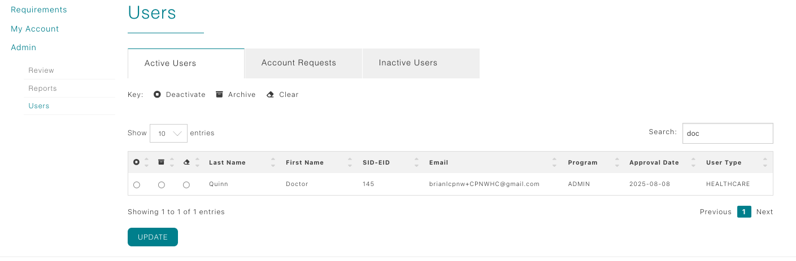

Healthcare Coordinator Guide
Manage Healthcare Users
Use the Admin > Users menu to manage healthcare contacts—review active accounts, and process new coordinator account requests.

Navigate the Users page
- From the Dashboard, open the Admin menu and select Users. The page loads with tabs for Active Users, Account Requests, and Inactive Users.
- Use the search box to filter by name, facility, or email. Paging controls at the bottom let you browse every contact tied to your site.
- Each row includes quick actions—view details, or archive/deactivate when a coordinator leaves your system.
Active Users tab
The Active Users tab lists healthcare coordinators only (students or education staff do not appear here).
- Use this view to confirm who currently has login access to your facility’s CPNW account.
- If someone no longer needs access, choose the archive option for permanent removal, deactivate for temporary removal. when deactivated, they move to the Inactive Users tab, keeping your active users list clean.
Account Requests tab
Whenever a healthcare staff member completes the registration form, their request arrives in this tab.
- Click the request to review the submitted contact info, role, and associated facility.
- Approve to activate their account immediately or decline with a note explaining what’s missing.
- Approved requests move to the Active Users tab; declined requests disappear but the registrant receives your message.
Inactive Users tab
Healthcare coordinators rarely revisit this tab, but it stores anyone you deactivated for record-keeping.
- Search or filter if a former coordinator returns so you can restore their access.
- Keep this tab clean by archiving accounts when staff change roles or leave the facility.
- Some organizations review this list annually to confirm who still needs access.